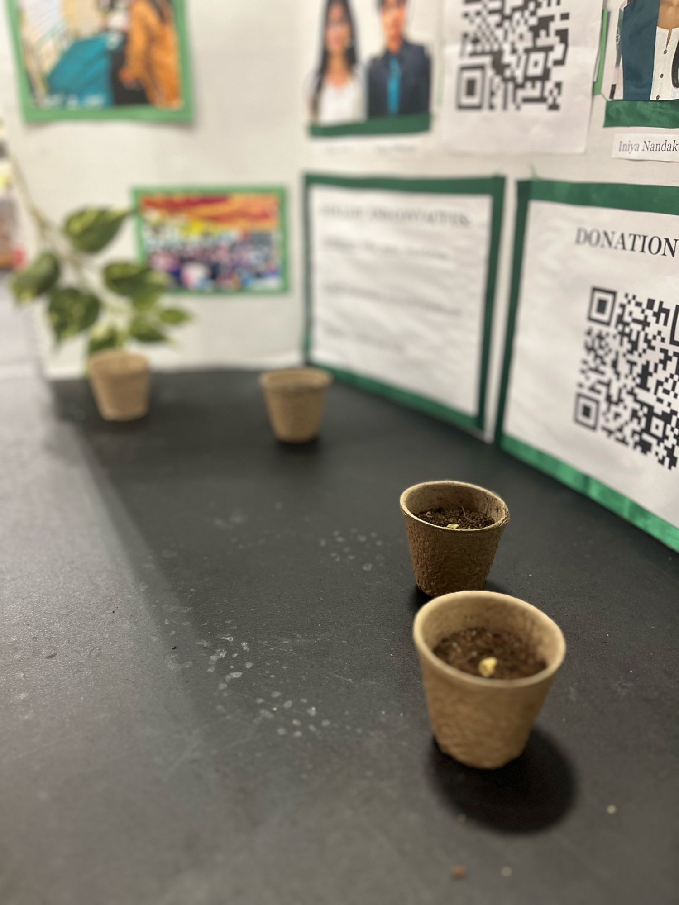
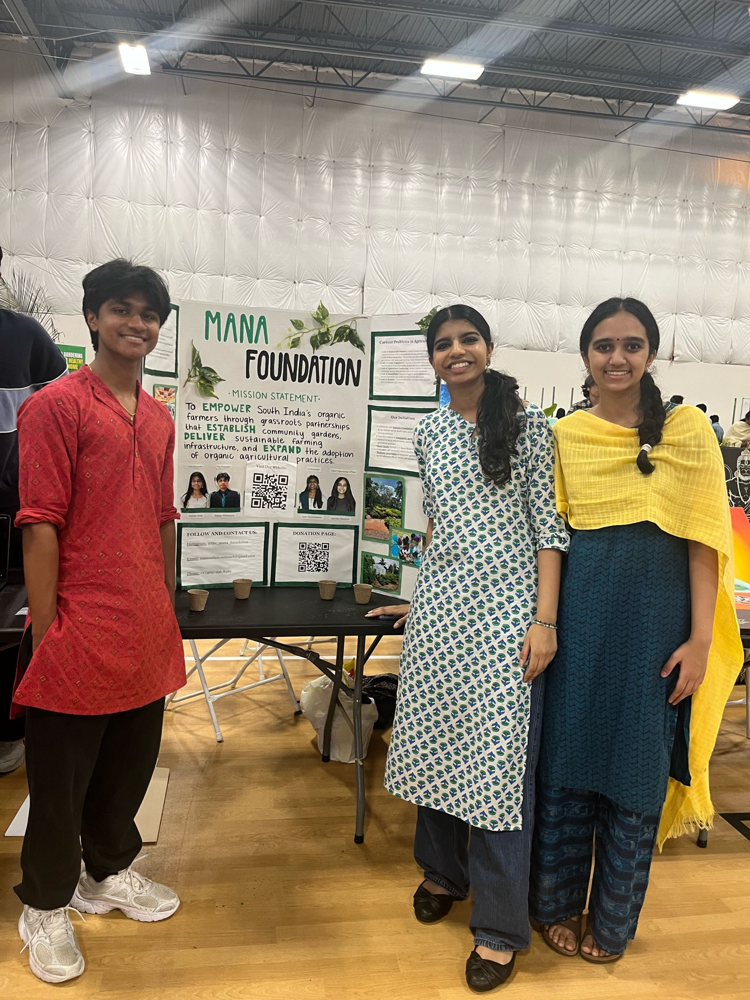
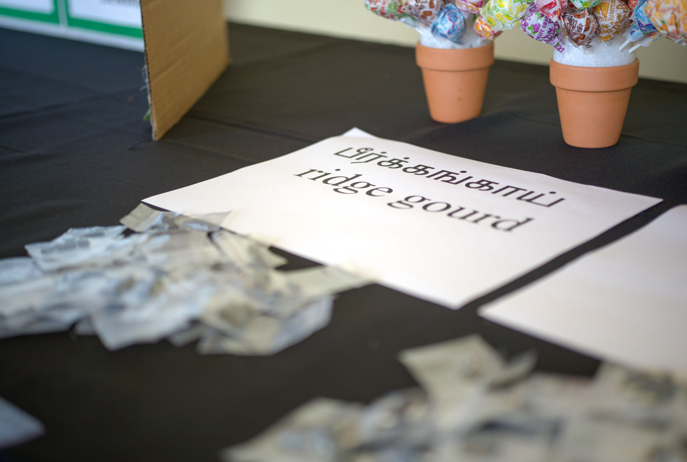

Free, hands-on planting workshops bringing the joy of growing food — and the story of the farmers who grow it — to kids across the Dallas-Fort Worth metroplex.
The Grow to Know Campaign
We're planning a series of free, interactive workshops at public libraries and parks throughout Coppell, Carrollton, and Frisco for children ages 5–13 and their parents. Together, we'll distribute approximately 300 biodegradable planting kits — each one built to help a family grow something real, together.

Every kit is designed to be simple enough for a five-year-old and meaningful enough to spark a real conversation about where food comes from.
A compostable planting cup that can go right into the ground as the seedling grows.
Pesticide-free soil, ready to give every seed a healthy start.
Green beans, radishes, or lettuce — each family picks what they want to grow.
So every pot stays labeled and every young gardener stays proud of what's theirs.
Simple, visual instructions for planting and caring for a first garden.
Our team of 10 youth volunteers from across the DFW metroplex will lead every family through planting their own seeds, step by step.
Participants learn how to properly water, feed, and care for their new seedling long after the workshop ends.
Each workshop dives into the challenges farmers face around the world, and why sustainable agriculture matters for our environment.
Families are encouraged to document their plant's progress. With permission, we'll spotlight submissions on our website and social media.

Every workshop is a chance to talk about where food really comes from — the farmers who grow it, the land it depends on, and why sustainable agriculture matters far beyond a backyard pot. It's the same hands-on curiosity that inspired Mann Nalam in the first place, just planted a little closer to home.

If you're a parent, teacher, librarian, or park organizer in Coppell, Carrollton, or Frisco who wants to host a workshop — or you'd just like updates as the campaign launches — we'd love to hear from you.
Email Us